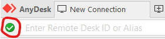

Подмосковный провайдер Seven-Sky.
Подключение к удаленному рабочему столу проходит хоть и долго, но дальше работать невозможно. Картинка еле двигается, команды идут с задержкой.
Пробовал менять сетевые настройки внутри AnyDesk, отключать брандмауер не помогло. Потом вспомнил про наш любимый ТСПУ, попробовал просто зайти с мобильного Tele2, все отлично. Вернулись к WiFi опять беда. Хммм… завернули трафик в VPN - все летает.
Не жду, что станет лучше, просто для истории хочу оставить здесь, авось кто с поиска попадет, пусть знает куда копать 
Трассировка маршрута к anydesk.com [13.33.243.39]
с максимальным числом прыжков 30:
1 1 ms 1 ms 2 ms 192.168.1.1
2 2 ms 1 ms 2 ms XXXXXXXXX
3 2 ms 2 ms 7 ms su27.cpx.ru [81.200.9.255]
4 5 ms 3 ms 2 ms il76.cpx.ru [81.200.9.238]
5 3 ms 3 ms 3 ms 195.94.233.65
6 * * * Превышен интервал ожидания для запроса.
7 4 ms 4 ms 3 ms RKN-REESTR-FILTER [77.247.184.253]
8 4 ms 3 ms 3 ms jun2.westcall.ru [195.94.226.115]
9 4 ms 3 ms 3 ms msk-bor7-cr1.ae57-2587.rascom.as20764.net [80.64.108.128]
10 16 ms 18 ms 16 ms msk-3v-cr1.be1-151.rascom.as20764.net [80.64.96.226]
11 10 ms 23 ms 11 ms spb-ivc-cr2.ae2-0.rascom.as20764.net [80.64.96.124]
12 * * * Превышен интервал ожидания для запроса.
13 * * * Превышен интервал ожидания для запроса.
14 * * * Превышен интервал ожидания для запроса.
15 * * * Превышен интервал ожидания для запроса.
16 * * * Превышен интервал ожидания для запроса.
17 * * * Превышен интервал ожидания для запроса.
18 * * * Превышен интервал ожидания для запроса.
19 * * * Превышен интервал ожидания для запроса.
20 * * * Превышен интервал ожидания для запроса.
21 17 ms 17 ms 18 ms server-13-33-243-39.hel50.r.cloudfront.net [13.33.243.39]
Поделитесь сетевыми дампами замедления, для истории.
замечал такую проблему у себя уже больше года назад, провайдер работает через билайна, тормоза решались пробросом порта анидеска на любом конце
ps вы трассировку делаете к сайту на cdn, трафик самой программы проходит через их сервера на hetzner, ovh и др vps провайдерах, вот пример
relay-f3a2c82a.net.anydesk.com
relay-e37a4922.net.anydesk.com
О, не знал, спасибо
UPD:
Блочится рандомно, видимо зависит от того через какой хост пойдет соединение. И да, в принципе можно попррбовать через сквид ловить эти хосты и искать в базах РКН
нечего там искать, их там нет. В самой проге нажми на

и она покажет сервер
или через system informer
{kind=link}
первый пост в теме так и продолжите игнорить?